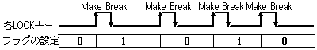
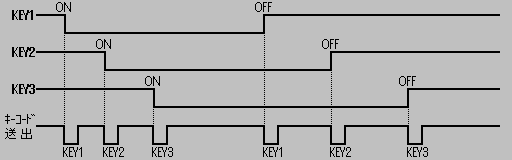
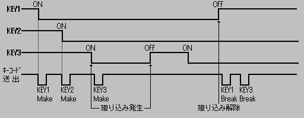
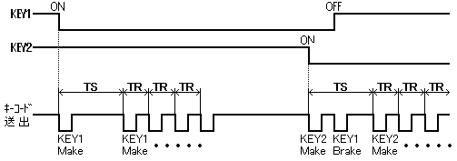

★INDEX
▲
|STN-42
|STN-43
|STN-44
|STN-45
|STN-46
|STN-47
|STN-48
▼
★INDEX
▲
|STN-42
|STN-43
|STN-44
|STN-45
|STN-46
|STN-47
|STN-48
▼
発行番号： | STN-45 | ||||||
|---|---|---|---|---|---|---|---|
発 行 日： | 96/05/08 | ||||||
メディア： | ●共 通 | ○CD-ROM | ○カートリッジ | ○その他 | |||
関 連： | ○プログラム | ●ハード | ○マニュアル | ○ツール | ○ゲーム | ○バグ | ○その他 |
情報区別： | ●新 規 | ○変 更 | ○追 加 | ||||
重 要 度： | ●厳 守 | ○推 奨 | ○参 考 | ○その他 | |||
添付資料： | ●無 | ○有 | |||||
件名補足： | |||||||
| bit７ | bit６ | bit５ | bit４ | bit３ | bit２ | bit１ | bit０ | |
|---|---|---|---|---|---|---|---|---|
| ペリフェラルID | ０ | ０ | １ | １ | ０ | １ | ０ | ０ |
| １ｓｔデータ | Right | Left | Down | Up | Start | ATRG | CTRG | BTRG |
| ２ｎｄデータ | RTRG | XTRG | YTRG | ZTRG | LTRG | KB TYPE2 | KB TYPE1 | KB TYPE0 |
| ３ｒｄデータ | ０ | Caps | Num | Scr | Make | １ | １ | Break |
| ４ｔｈデータ | D7 | D6 | D5 | D4 | D3 | D2 | D1 | YD0 |
●対応ペリフェラルのキャラクタコード：キーボード＝”Ｋ”
●サターンペリフェラルID ＝ ３４Ｈ
| サターンペリフェラルタイプ・・・・ | ３Ｈ |
|---|---|
| データサイズ・・・・・・・・・・・ | ４Ｈ(４バイト) |
| KB TYPE2〜0・・・・・・・・・・・ | 000B=セガサターンキーボード 001B〜110B=予約 111B=キーボードとして認識されない |
|---|---|
| CapsLock・・・・・・・・・・・ | CapsLockがロック状態で「１」を出力する |
| NumLock・・・・・・・・・・・ | NumLockがロック状態で「１」を出力する |
| ScrLock・・・・・・・・・・・ | ScrLockがロック状態で「１」を出力する |
| Make・・・・・・・・・・・ | D7〜D0に有効なMakeコードがあるとき「１」を出力する |
| Break・・・・・・・・・・・ | D7〜D0に有効なBreakコードがあるとき「１」を出力する |
| D7〜D0・・・・・・・・・・・ | キーコード。このデータはMake,Breakが「１」以外のときは不定 キーコードとキーについては後述「●キーコード対応表」を参照 |
| Right,Left,Down,Up,Start・・・・・・・・・ ATRG,BTRG,CTRG,XTRG,YTRG,ZTRG,LTRG,RTRG | ボタン(キー)が押されている間「０」を出力する |
■セガサターン標準パットボタンとキーボードの関係は以下のようになります。
| Right... | [→]キー | CTRG.... | [Ｃ]キー |
|---|---|---|---|
| Left.... | [←]キー | XTRG.... | [Ａ]キー |
| Down.... | [↓]キー | YTRG.... | [Ｓ]キー |
| Up...... | [↑]キー | ZTRG.... | [Ｄ]キー |
| Start... | [ESC]キー | LTRG.... | [Ｑ]キー |
| ATRG.... | [Ｚ]キー | RTRG.... | [Ｅ]キー |
| BTRG.... | [Ｘ]キー |

ロールオーバーで順次キーコードを送出する。また、キーを開放した時も順次コードを送出する。
但し、キーの重ね打ちにより発生する廻り込みを検出したときは、その状態が解除されるまで待ち続ける。
1)廻り込みが発生しない場合

2)廻り込みが発生する場合

3)リピート機能(全キー対象)

キー押下中は、Makeコードを送出し続ける。また、他のキーを押すと新たにリピートサイクルに入る。
０ | １ | ２ | ３ |
４ | ５ | ６ | ７ |
８ | ９ | Ａ | Ｂ |
Ｃ | Ｄ | Ｅ | Ｆ | |
|---|---|---|---|---|---|---|---|---|---|---|---|---|---|---|---|---|
| 00H | Ｆ９ | Ｆ５ | Ｆ３ | Ｆ１ | Ｆ２ | Ｆ12 | Ｆ10 | Ｆ８ | Ｆ６ | Ｆ４ | Tab | 半全 | ||||
| 10H | Alt | Shift | ひら | Ctrl | Ｑた | １ | Alt | Ctrl | Ｚつ | Ｓと | Ａち | Ｗて | ２ | |||
| 20H | Ｃそ | Ｘさ | Ｄし | Ｅい | ４ | ３ | Ｆは | スペース | Ｖひ | Ｔか | Ｒす | ５ | ||||
| 30H | Ｎみ | Ｂこ | Ｈく | Ｇき | Ｙん | ６ | Ｍも | Ｊま | Ｕな | ７ | ８ | |||||
| 40H | ＜ね | Ｋの | Ｉに | Ｏら | ０ | ９ | ＞る | ？め | Ｌり | ；れ | Ｐせ | − | ||||
| 50H | ＿ろ | ：け | ＠ | ＾ | CapsL | Shift | Enter | ［ | ］む | |||||||
| 60H | 変換 | Back | 無変 | ￥ | ||||||||||||
| 70H | Esc | Ｆ11 | ScrL | |||||||||||||
| 80H | Ins | Pause | Ｆ７ | Del | ← | Home | End | ↑ | ↓ | UP | Down | → |
★INDEX
▲
|STN-42
|STN-43
|STN-44
|STN-45
|STN-46
|STN-47
|STN-48
▼